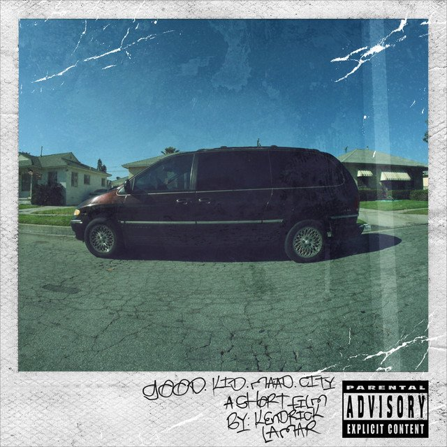

good kid, m.A.A.d city

- Sherane a.k.a Master Splinter’s Daughter
- Bitch, Don’t Kill My Vibe
- Backseat Freestyle
- The Art of Peer Pressure
- Money Trees
- Poetic Justice
- good kid
- m.A.A.d city
- Swimming Pools (Drank)
- Sing About Me, I'm Dying Of Thirst
- Real
- Compton
About the album
Good Kid, M.A.A.D City is the second studio album by Kendrick Lamar. It was released on October 22, 2012, through Top Dawg Entertainment,
Aftermath Entertainment and Interscope Records. It is Lamar's major label debut, after his independently released first album Section.80 in 2011.
GKMC Billed as a "short film by Kendrick Lamar" on the album cover, the concept album follows the story of Lamar's teenage experiences
in the drug-infested streets and gang lifestyle of his native Compton. The album earned Lamar four Grammy Award nominations
at the 2014 Grammy Awards, including Album of the Year. The album was supported by five singles like – "Swimming Pools (Drank)" and "Bitch, Don't Kill My Vibe".
All achieved chart success of varying degrees. Good Kid, M.A.A.D City received widespread acclaim from critics, who praised its thematic scope and Lamar's lyrics.
The album debuted at number two on the US Billboard 200, selling 242,000 copies in its first week
– earning the highest first-week hip hop album sales of 2012 from a male artist,
along with the best-selling debut from a male artist of the year. The album was also named to many end-of-the-year lists, often topping them.
It was later certified triple platinum by the Recording Industry Association of America (RIAA).
Order the album